3-D vs 1-D Comparisons
- 3-D Model: RSQSim 2740
- 1-D Model: RSQSim/BBP (Vs30=863 m/s)
Table Of Contents
4 Similar Vs Sites
(top)
Results for all 4 with Vs30 within 150 m/s of 1-D Vs30=863 m/s
| Name | Vs30 |
|---|
| s279 | 750.9 m/s |
| PAS | 838.8 m/s |
| s119 | 839.6 m/s |
| s480 | 750.5 m/s |
4 Similar Vs Sites 3-D Gain Spectra
(top)

4 Similar Vs Sites 3-D Mag/Distance Gain Plots
(top)
| 3s | 5s | 7.5s | 10s |
|---|
| 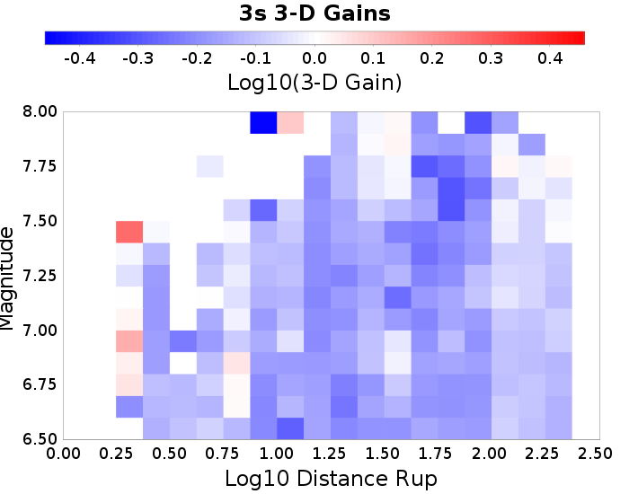 |  | 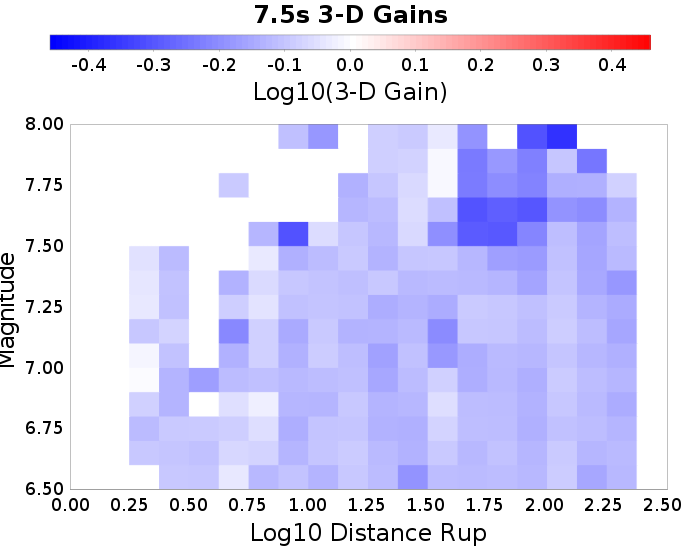 |  |
USC
(top)
| Name | USC |
|---|
| Latitude | 34.0192 |
| Longitude | -118.286 |
| Site Parameters | |
| Vs30 (m/sec) | 313.1 |
| Depth 1.0 km/sec (m) | 600.0 |
| Depth 2.5 km/sec (km) | 4.1 |
USC 3-D Gain Spectra
(top)
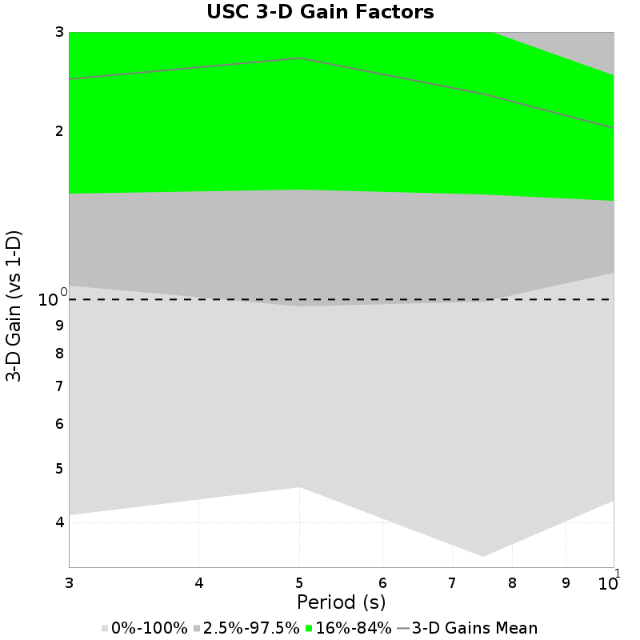
USC 3-D Mag/Distance Gain Plots
(top)
| 3s | 5s | 7.5s | 10s |
|---|
| 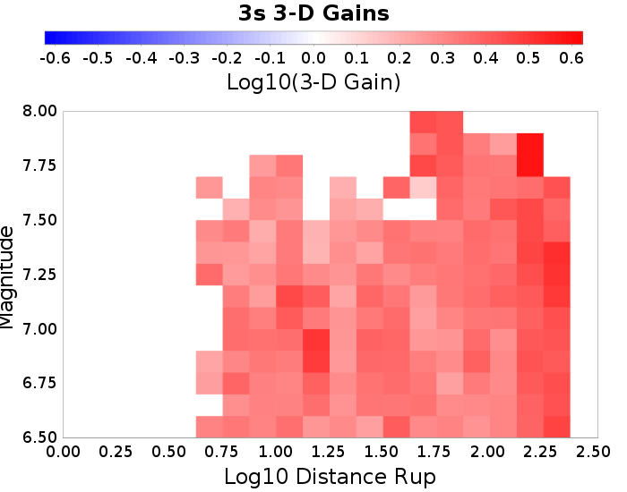 |  | 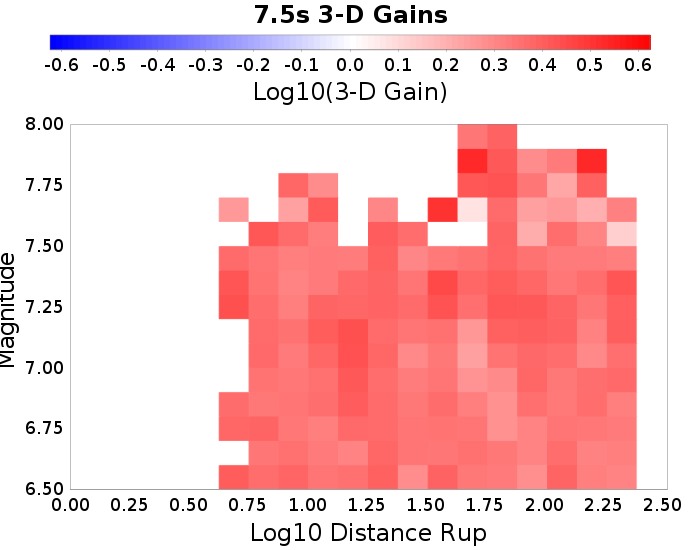 |  |
LAPD
(top)
| Name | LAPD |
|---|
| Latitude | 34.557 |
| Longitude | -118.125 |
| Site Parameters | |
| Vs30 (m/sec) | 2573.6 |
| Depth 1.0 km/sec (m) | 0.0 |
| Depth 2.5 km/sec (km) | 0.0 |
LAPD 3-D Gain Spectra
(top)

LAPD 3-D Mag/Distance Gain Plots
(top)
| 3s | 5s | 7.5s | 10s |
|---|
| 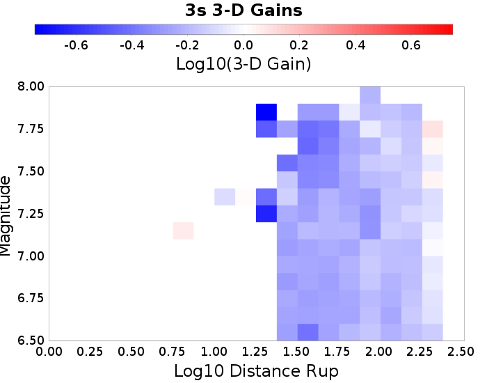 |  |  | 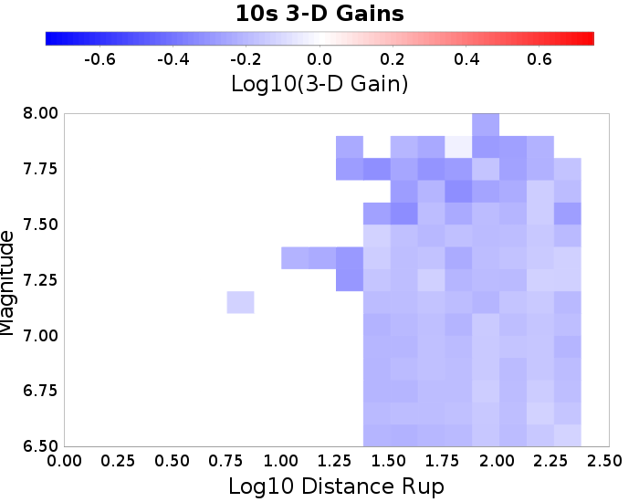 |
s279
(top)
| Name | s279 |
|---|
| Latitude | 34.37809 |
| Longitude | -118.34757 |
| Site Parameters | |
| Vs30 (m/sec) | 750.9 |
| Depth 1.0 km/sec (m) | 100.0 |
| Depth 2.5 km/sec (km) | 0.4 |
s279 3-D Gain Spectra
(top)

s279 3-D Mag/Distance Gain Plots
(top)
| 3s | 5s | 7.5s | 10s |
|---|
 |  | 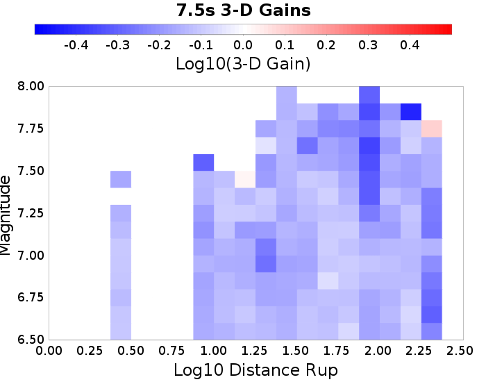 | 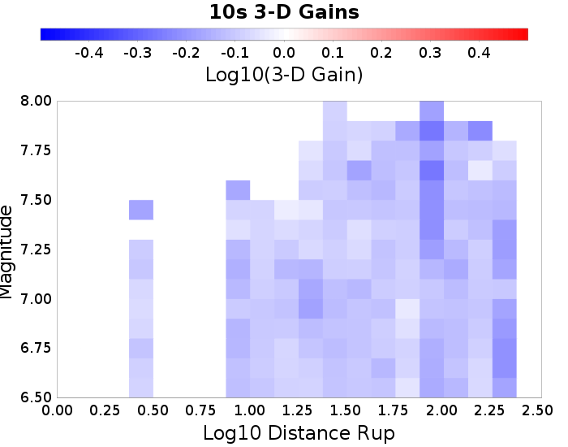 |
PAS
(top)
| Name | PAS |
|---|
| Latitude | 34.148426 |
| Longitude | -118.17119 |
| Site Parameters | |
| Vs30 (m/sec) | 838.8 |
| Depth 1.0 km/sec (m) | 100.0 |
| Depth 2.5 km/sec (km) | 0.7 |
PAS 3-D Gain Spectra
(top)

PAS 3-D Mag/Distance Gain Plots
(top)
s119
(top)
| Name | s119 |
|---|
| Latitude | 34.55314 |
| Longitude | -118.72826 |
| Site Parameters | |
| Vs30 (m/sec) | 839.6 |
| Depth 1.0 km/sec (m) | 100.0 |
| Depth 2.5 km/sec (km) | 0.4 |
s119 3-D Gain Spectra
(top)
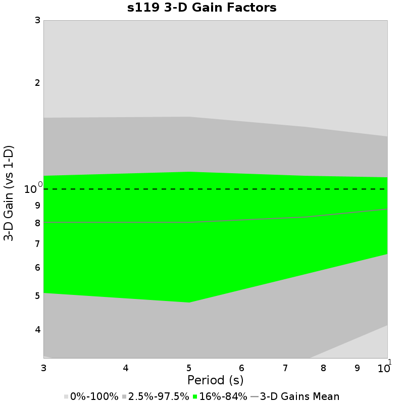
s119 3-D Mag/Distance Gain Plots
(top)
SBSM
(top)
| Name | SBSM |
|---|
| Latitude | 34.064987 |
| Longitude | -117.29201 |
| Site Parameters | |
| Vs30 (m/sec) | 357.1 |
| Depth 1.0 km/sec (m) | 400.0 |
| Depth 2.5 km/sec (km) | 1.9 |
SBSM 3-D Gain Spectra
(top)
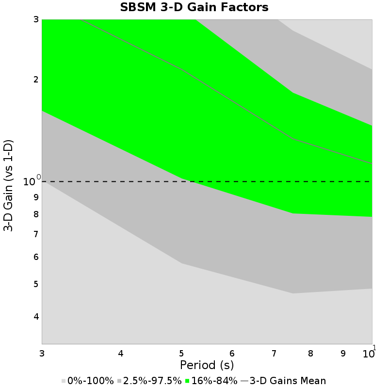
SBSM 3-D Mag/Distance Gain Plots
(top)
WNGC
(top)
| Name | WNGC |
|---|
| Latitude | 34.041824 |
| Longitude | -118.0653 |
| Site Parameters | |
| Vs30 (m/sec) | 300.2 |
| Depth 1.0 km/sec (m) | 500.0 |
| Depth 2.5 km/sec (km) | 3.5 |
WNGC 3-D Gain Spectra
(top)
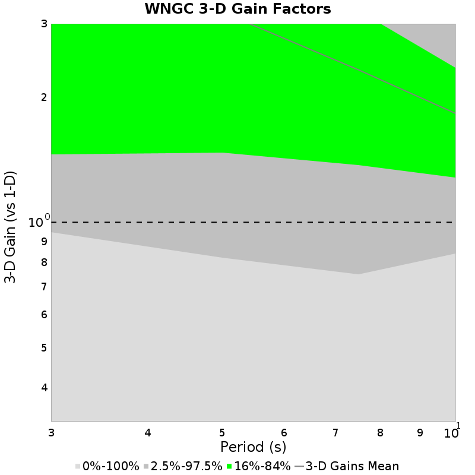
WNGC 3-D Mag/Distance Gain Plots
(top)
| 3s | 5s | 7.5s | 10s |
|---|
 | 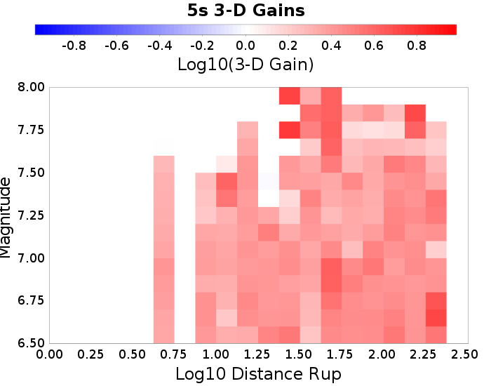 |  | 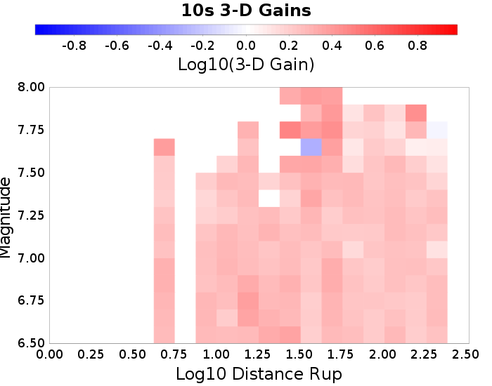 |
s480
(top)
| Name | s480 |
|---|
| Latitude | 34.15755 |
| Longitude | -117.87389 |
| Site Parameters | |
| Vs30 (m/sec) | 750.5 |
| Depth 1.0 km/sec (m) | 100.0 |
| Depth 2.5 km/sec (km) | 1.3 |
s480 3-D Gain Spectra
(top)

s480 3-D Mag/Distance Gain Plots
(top)
STNI
(top)
| Name | STNI |
|---|
| Latitude | 33.93088 |
| Longitude | -118.17881 |
| Site Parameters | |
| Vs30 (m/sec) | 272.5 |
| Depth 1.0 km/sec (m) | 900.0 |
| Depth 2.5 km/sec (km) | 5.6 |
STNI 3-D Gain Spectra
(top)

STNI 3-D Mag/Distance Gain Plots
(top)
| 3s | 5s | 7.5s | 10s |
|---|
 | 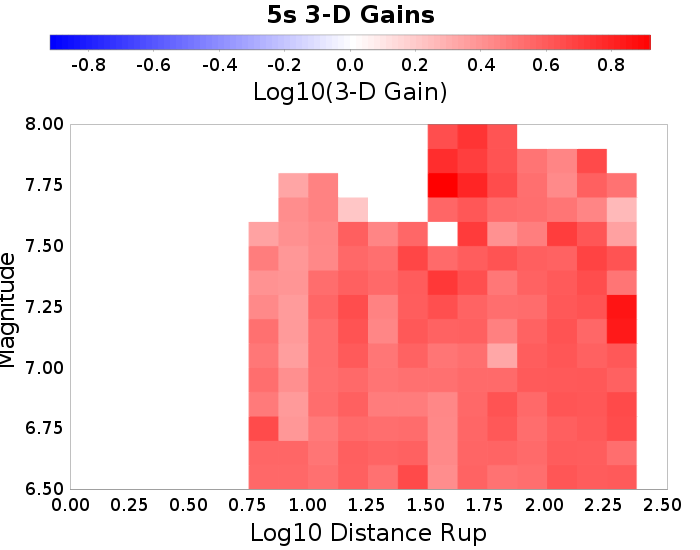 | 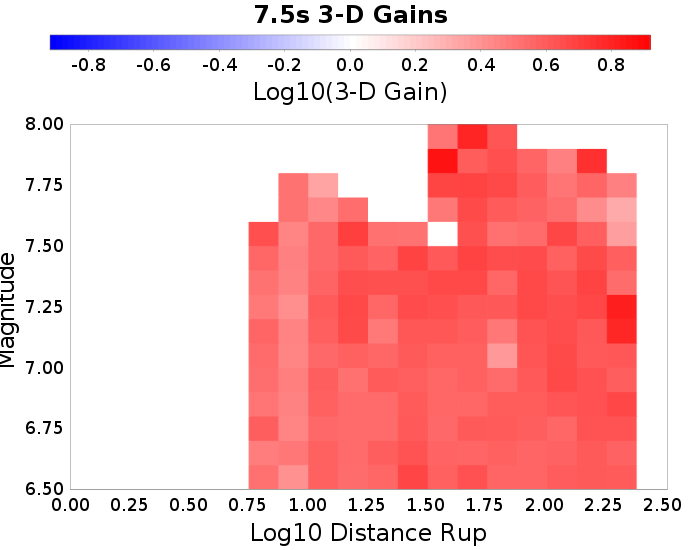 |  |